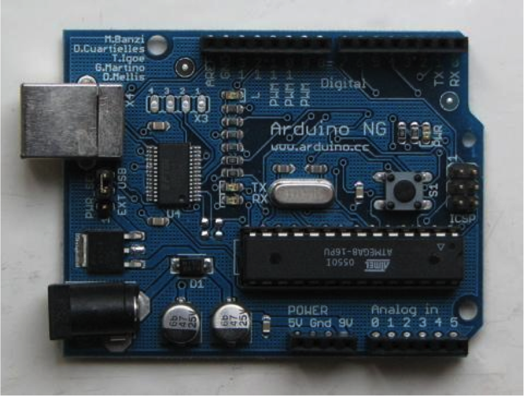
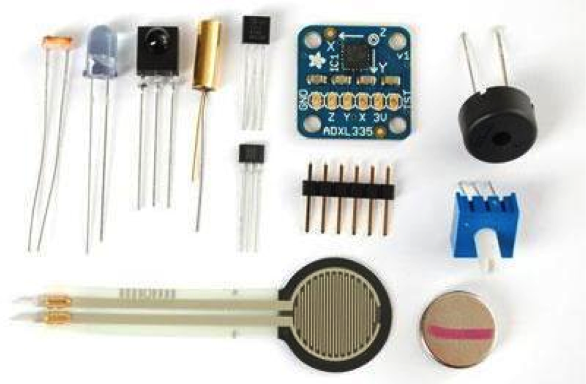
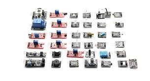

Introduction to Arduino Microcontrollers
What is a Microcontroller vs. a Microprocessor?
What is an Arduino?


- Physical computing platform
- USB programmable
- Large Community
- Multiple platforms
- Based on ATmega328 - 8bit
- 32k Memory
- PWM, I2C, SPI
- 14 Digital I/O ports (6 PWM outputs)
- 6 analog inputs
shapes and sizes
What are sensors?


- light
- sound
- body heat
- vision
- distance
- infrared
- touch
- motion
- accelerometer
- GPS
- WIFI
- Bluetooth
- Other computing devices.. I2C
void main() {
int x = foo();
int y= bar()); /* this is a comment */
exit(1);
}
some text